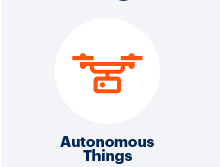

Blockchain

Block chain is a system in which a record of transactions made in bitcoin or another cryptocurrency are maintained across several computers that are linked in a peer-to-peer network. It is important for maintaining a permanent and tamper-proof record of transactional data.
Block chains store information across a network of personal computers. No one person or organisation owns the system everyone can use and run it, making it difficult for one person to take it down.
The block chain uses cryptography to ensure records can’t be counterfeited or changed by anyone else. Only one person can be the owner of money at one time.
In the future block chains that manage and verify online data could enable us to launch companies that are entirely run by algorithms. Thus making self- driving cars safer and help us protect our online identities.
Autonomous Things (Robots)

Autonomous robots can act on their own, independent of any controller. The basic idea is to program the robot to respond a certain way to outside stimuli.
By definition, robots are at least semi-autonomous meaning that they can react to some events and conditions without need of direction. The term autonomous robot suggests a machine that can accomplish complex objectives without need of external control. The following are illustrative examples.
Immersive Experience

An immersive experience is an illusory environment that completely surrounds you such that you feel that you are inside it and part of it. The term is associated with technology environments that command the senses such as virtual reality and mixed reality.It can be used in classroom scenarios to engage children and to enhance their learning experience. An example of this could be exploring space through a headset.